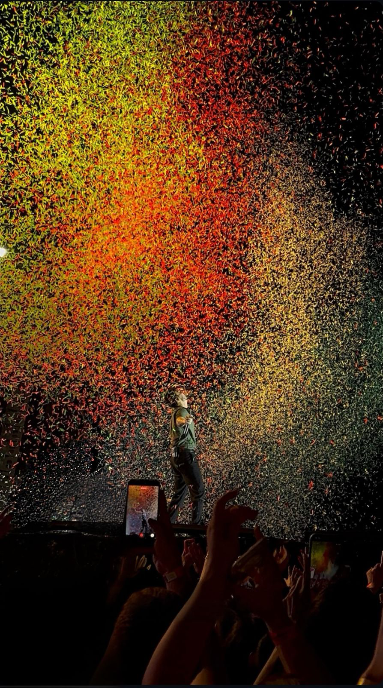
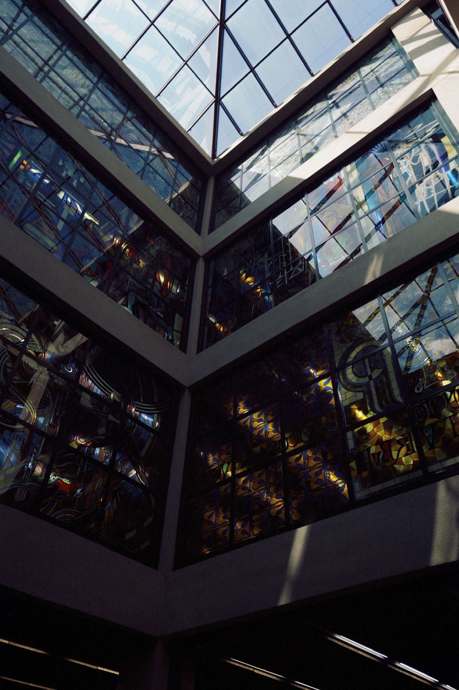

Coleção
de criações.
Sou Pedro Henrique Santos Garcia, estudante de Ciência da Computação na PUCPR. Esta é minha coleção de criações: uma seleção de experiências com fotografia, tipografia e robótica, que acompanha meu portfólio e mostra outras formas de aprender criando.
Luz, atmosfera e momentos.
A fotografia é outra forma que encontrei de explorar composição, luz e narrativa visual. Gosto de observar como cores, contrastes e ambientes transformam momentos cotidianos em imagens com identidade própria.
{kind=link}

{kind=link}

Minha letra, em outros lugares.
Sempre gostei da minha caligrafia. Um dia surgiu a ideia de transformá-la em uma fonte — e resolvi experimentar. A Pedro Hand saiu do papel e hoje aparece no meu jogo e no meu portfólio.
Uma letra minha.Conheça a fonte e experimente escrever ↗
Do código ao mundo físico.
Minha formação no TechBot, da My Robot School, aconteceu entre 2021 e 2022. Ao longo desse percurso, desenvolvi dezenas de projetos envolvendo montagem, eletrônica, automação e lógica de programação. Aqui selecionei três registros de 2021: o carro que desvia de obstáculos, o separador de bolinhas e o cofre eletrônico.
Esta área também reúne espaço para trabalhos de design, fotografia e experimentos menores, com contexto e aprendizados de cada criação.
3 registros publicados
As criações existem.
As histórias estão chegando.
Os registros desta categoria ainda não foram publicados. Em breve, fotos, vídeos e aprendizados vão dar forma a esta parte da coleção.
Uso de inteligência artificial
Usei o ChatGPT, da OpenAI, para apoiar a organização e a revisão dos textos. A implementação e os ajustes deste site em HTML, CSS e JavaScript tiveram auxílio do Codex, da OpenAI. Em O Tirano, usei o ChatGPT como apoio à programação em blocos no Construct 3. As fotografias publicadas são registros originais, sem geração ou alteração por IA. Os mapas do jogo foram desenhados pela Maria.